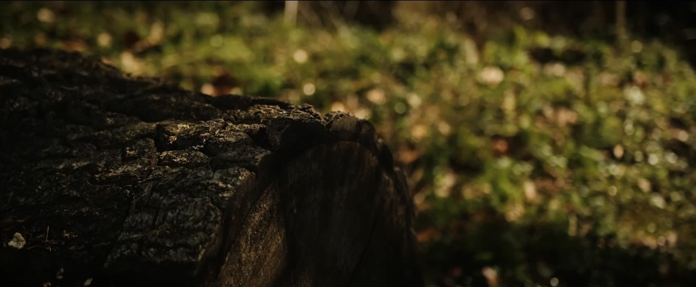
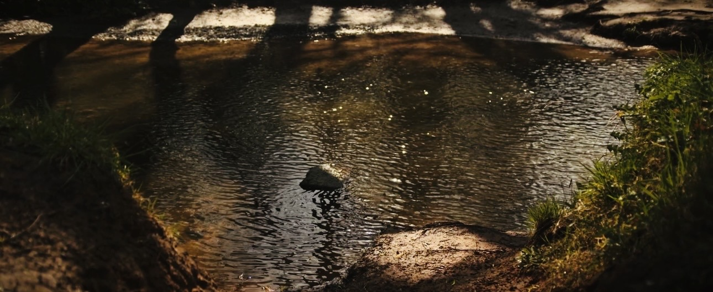
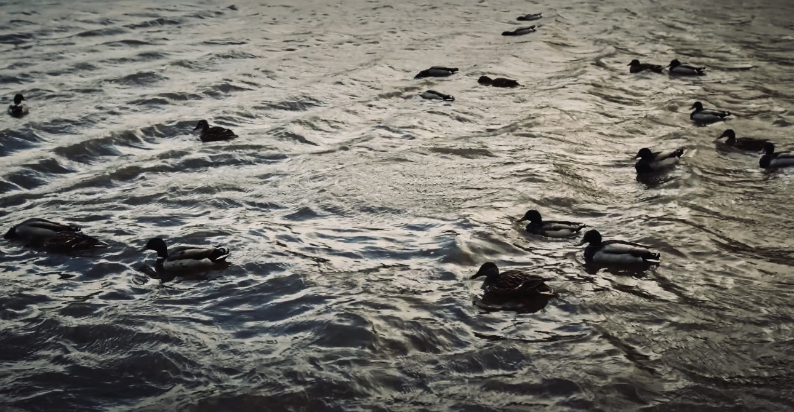
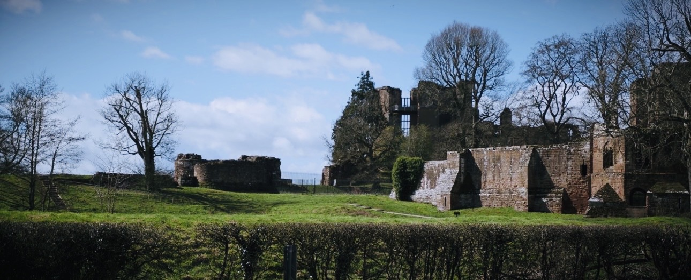
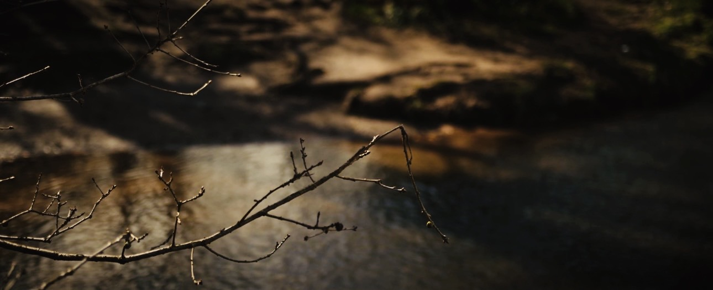
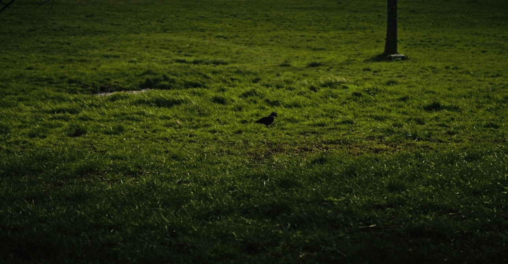
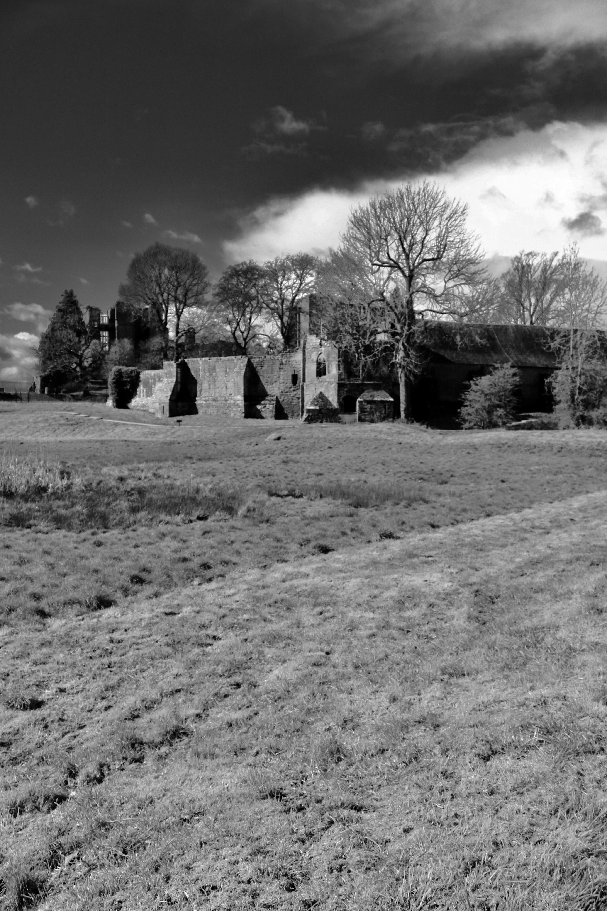

Student Media & Interactive Content
Explore documentary videos and interactive learning games.
Trail Documentary
Photo Gallery











Explore documentary videos and interactive learning games.






